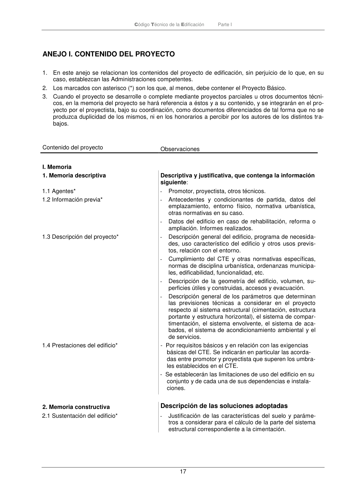

Parte I · edición 2022-06-14 · capa oficial
Documento PARTE-I-oficial · SHA-256 del PDF eaed39b98fbe715e9db817ab9bde93a5031c3d2c07440dd6a8653572b053a07f
Copia fiel del PDF fuente · Fuente oficial
Ficha de la disposición en la fuente oficial
Formatos: JSON del segmento · Markdown
1. Memoria descriptiva Descriptiva y justificativa, que contenga la información siguiente: 1.1 Agentes* - Promotor, proyectista, otros técnicos. 1.2 Información previa* - Antecedentes y condicionantes de partida, datos del emplazamiento, entorno físico, normativa urbanística, otras normativas en su caso. - Datos del edificio en caso de rehabilitación, reforma o ampliación. Informes realizados. 1.3 Descripción del proyecto* - Descripción general del edificio, programa de necesida- des, uso característico del edificio y otros usos previs- tos, relación con el entorno. - Cumplimiento del CTE y otras normativas específicas, normas de disciplina urbanística, ordenanzas municipa- les, edificabilidad, funcionalidad, etc. - Descripción de la geometría del edificio, volumen, su- perficies útiles y construidas, accesos y evacuación. - Descripción general de los parámetros que determinan las previsiones técnicas a considerar en el proyecto respecto al sistema estructural (cimentación, estructura portante y estructura horizontal), el sistema de compar- timentación, el sistema envolvente, el sistema de aca- bados, el sistema de acondicionamiento ambiental y el de servicios. 1.4 Prestaciones del edificio* - Por requisitos básicos y en relación con las exigencias básicas del CTE. Se indicarán en particular las acorda- das entre promotor y proyectista que superen los umbra- les establecidos en el CTE. - Se establecerán las limitaciones de uso del edificio en su conjunto y de cada una de sus dependencias e instala- ciones.
